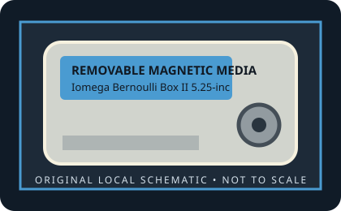

[ REMOVABLE MEDIA // MODEL-SPECIFIC RECORD ]
Iomega Bernoulli Box II 5.25-inch 20 MB Cartridge
Bernoulli Box II, 5.25-inch cartridge generation introduced in 1987. 20 MB nominal capacity. The smaller 5.25-inch-class rigid cartridge contains a magnetic disk; this is not the original 8-inch Bernoulli 20 MB medium.

IDENTIFICATION: Verify the exact capacity, physical format, and generation printed on the medium. A cartridge has no host interface of its own; drive interface and system support must be checked against the exact reader model.
Format, capacity and compatibility
| Product / media model | Iomega Bernoulli Box II 5.25-inch 20 MB Cartridge |
|---|---|
| Generation / format | Bernoulli Box II, 5.25-inch cartridge generation introduced in 1987. |
| Capacity and medium | 20 MB nominal capacity. The smaller 5.25-inch-class rigid cartridge contains a magnetic disk; this is not the original 8-inch Bernoulli 20 MB medium. |
| Media and drive interface | The cartridge has no electrical connector. The Box II external drive connects by SCSI; internal installations are drive/controller-interface specific. |
| Compatibility | Requires a Bernoulli Box II drive supporting its 20 MB generation. Box II was sold in internal and external configurations; the external unit used SCSI, while an internal drive needs the matching host interface and controller. Do not infer cross-capacity write compatibility. |
| Version and model caveat | Iomega introduced the 5.25-inch Box II in 1987. Match the 5.25-inch form, 20 MB generation, and supported Box II drive; the capacity printed on the cartridge is not an interface specification. |
Handling and preservation
Keep the cartridge in its protective case, away from dust, moisture, heat, strong magnetic fields, and physical shock. Do not open a sealed cartridge or force it into a drive. For preservation, image read-only with a known-compatible mechanism, retain the source media, record the drive/interface used, and verify copied data with checksums.
- Photograph the label and shell before use; preserve packaging, write-protect state, and acquisition notes.
- Keep at least two independent verified copies of important data. A legacy removable cartridge by itself is not an archival strategy.
Model and generation notes
Iomega introduced the 5.25-inch Box II in 1987. Match the 5.25-inch form, 20 MB generation, and supported Box II drive; the capacity printed on the cartridge is not an interface specification.
Storage capacity names and drive interface names describe different things: confirm the cartridge format/generation first, then check the exact reader model, host connector, controller, operating-system driver, and filesystem separately.
Sources and standards
- Museum of Obsolete Media — Iomega Bernoulli disk, 5.25-inchDocuments the 1987 Box II generation, initial 20 MB capacity, form factor, and internal/external SCSI drive options.
- InfoWorld, November 1987, p. 133 — Bernoulli Box II (Google Books)Contemporary announcement/review for the Box II launch generation.
- Internet Archive — Bernoulli Box II 20 MB documentation searchSearches archived manuals and technical material for the specific 20 MB Box II generation.
Discontinued-media specifications are cross-checked against period product material and museum/archive documentation. Family-level history does not replace the exact drive manual for interchangeability.